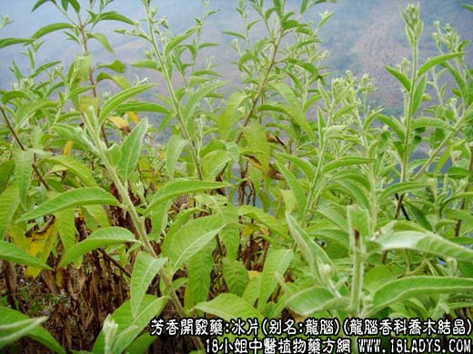

【中药概述】
冰片，别名艾片、龙脑、梅片，为龙脑香科乔木的树脂加工结晶品。辛、苦，微寒。归心、脾、肺经。
1．开窍醒神：用于温热病高热神昏、中风痰厥，神志昏迷、痉厥，不省人事等，如（安宫牛黄丸）。
2．清热消肿：外用于咽喉肿痛、口舌溃烂、目赤肿痛及耳道流脓等，如（<外科正宗>冰硼散）、（拔云散）。
3．用于疮疡痈肿、目赤云翳，如（<重楼玉钥>生肌散）。
【药效鉴别】
冰片走窜开窍，“无往不达”，其性凉，清热解毒的效力优于麝香。能引药深入病处，若病邪尚在体浅部者，用之反有引病深入的可能，故病在深部者用之。
【药理作用】
体外对葡萄球菌、链球菌等有抑制作用。
【化学成分】
含右旋龙脑律草烯、榄香烯、龙脑及香醇酮等。
【用量用法】
0.5——5g，入丸散剂，不宜入汤剂。外用适量。
【注】
药用冰片有三种。艾片（为菊科植物艾纳香的叶中提取的结晶，为天然冰片的一种）；机制冰片（是用樟脑、松节油等经化学方法合成的）；龙脑冰片（为龙脑香科植物龙脑香树脂的加工
品，又叫“梅片”）。